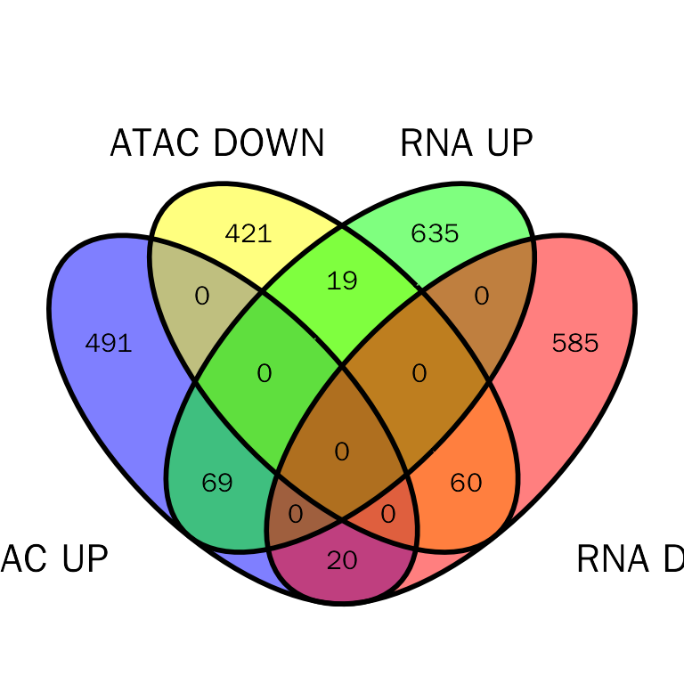
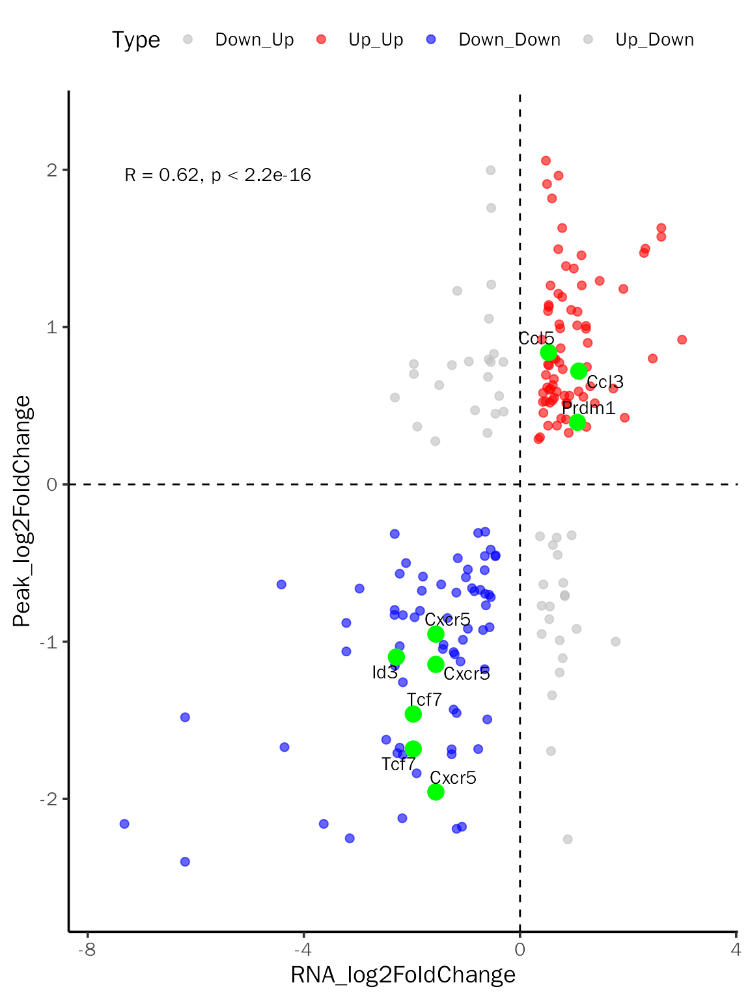
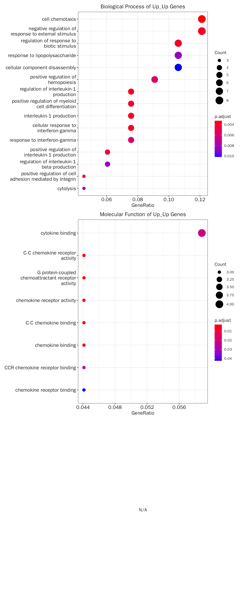
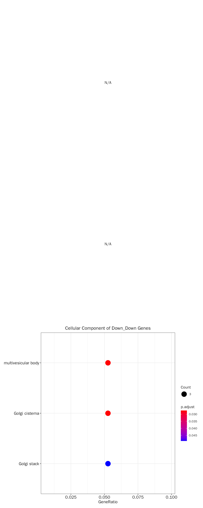

IntegrateATACDE.RmdEukaryotic chromatin is tightly packaged into nucleosomes, and the positioning of nucleosomes can regulate gene expression by changing the in vivo availability of binding sites to transcription factors (TFs). Assay of Transposase Accessible Chromatin sequencing (ATAC-seq) is a technique used to assess genome-wide chromatin accessibility. It is widely used to identify cis-regulatory regions (e.g. promoters and enhancers). Thus, combining ATAC-seq with RNA-seq can be used to understanding the role of cis-regulatory regions in regulating gene expression.
Different from those in Integrate RNA-seq with ATAC-seq (intersection), we will integrate RNA-seq and ATAC-seq based on differential expression analysis results. In detail, integrating differentially expressed genes with differentially accessible peaks.
In this vignette, we will focus on promoter regions. For the enhancer regions, we will talk about in Integrate RNA-seq with ChIP-seq (differential analysis).
The data used here are from In vivo CD8+ T cell CRISPR screening reveals control by Fli1 in infection and cancer:
The following is an example with count matrix, if you only have bam files and peak files, please refer to Integrate RNA-seq with ChIP-seq (differential analysis).
Format the count matrix:
# the GSE149836_combUnionReadsWithLabels.txt is downloaded from https://www.ncbi.nlm.nih.gov/geo/query/acc.cgi?acc=GSE149836
atac.counts = read.table(file = "GSE149836_combUnionReadsWithLabels.txt", sep = "\t", header = T)
# the first three columns should be "CHR", "START", "END"
colnames(atac.counts) = c("CHR", "START", "END", "Fli1KO_1","Fli1KO_2","Fli1KO_3","Fli1KO_4","WT_1","WT_2")
# save file
write.table(x = atac.counts, file = "RA_ATAC_counts_raw.txt", sep = "\t", quote = FALSE, row.names = FALSE)Annotate the count matrix:
# this will save count matrix and annotated results to consensus_peak_matrix.txt and consensus_peak_anno.txt
PeakMatrix(meta.file = "RA_ATAC_counts_raw.txt",
count.matrix = TRUE, species = "Mouse", seq.style = "UCSC",
up.dist = 2000, down.dist = 2000)Prepare metadata:
atac.meta = data.frame(SampleName = c("Fli1KO_1","Fli1KO_2","Fli1KO_3","Fli1KO_4","WT_1","WT_2"),
condition = c(rep("KO", 4), rep("WT", 2))) %>%
tibble::column_to_rownames(var = "SampleName")
# save file
write.table(x = atac.meta, file = "RA_ATAC_mata_raw.txt", sep = "\t", quote = FALSE, row.names = TRUE)To simplify the steps of obtaining differential expression analysis results, DEbPeak provides ConductDESeq2 to perfrom all steps of differential expression analysis, including quality control, principal component analysis, differential expression analysis and functional enrichment analysis.
With count matrix, we will perform differential analysis:
# RA_ATAC_count.txt is above consensus_peak_matrix.txt
peak.matrix.file <- system.file("extdata", "RA_ATAC_count.txt", package = "DEbPeak")
# RA_ATAC_meta.txt is above RA_ATAC_mata_raw.txt
peak.meta.file <- system.file("extdata", "RA_ATAC_meta.txt", package = "DEbPeak")
ConductDESeq2(count.matrix.file = peak.matrix.file, meta.file = peak.meta.file, data.type = "ATAC",
gene.type = "SYMBOL", outlier.detection = F, min.count = 0,
peak.anno.key = "All", group.key = "condition", ref.group = "WT",
out.folder = '/home/songyabing/R/learn/tmp/DEbPeak/ATACDE',
signif = "padj", signif.threshold = 0.05, l2fc.threshold = 0, gmt.file = '')## Create DESeqDataSet from count matrix!## Warning in DESeqDataSet(se, design = design, ignoreRank): some variables in
## design formula are characters, converting to factors## Conduct Quality Control on Counts!## Differential expression analysis with DESeq2!## [1] "Warning: 7 features with 0 counts in all samples are to be removed for this analysis."
## [1] "Count distributions are to be computed for:"
## [1] "Fli1KO_1" "Fli1KO_2" "Fli1KO_3" "Fli1KO_4" "WT_1" "WT_2"## Differential expression analysis with DESeq2!## Raw gene number: 101921## Gene number after filtered with counts bigger than 0 : 101921## Conduct Quality Control on Samples!## Differential expression analysis with DESeq2!## Conduct PCA analysis!
## Conduct PCA analysis!## Differential expression analysis with DESeq2!## Use all genes for PCA!## Coordinate system already present. Adding new coordinate system, which will
## replace the existing one.
## Coordinate system already present. Adding new coordinate system, which will
## replace the existing one.
## Coordinate system already present. Adding new coordinate system, which will
## replace the existing one.
## Coordinate system already present. Adding new coordinate system, which will
## replace the existing one.
## Coordinate system already present. Adding new coordinate system, which will
## replace the existing one.
## Coordinate system already present. Adding new coordinate system, which will
## replace the existing one.
## Coordinate system already present. Adding new coordinate system, which will
## replace the existing one.
## Coordinate system already present. Adding new coordinate system, which will
## replace the existing one.
## Coordinate system already present. Adding new coordinate system, which will
## replace the existing one.
## Coordinate system already present. Adding new coordinate system, which will
## replace the existing one.
## Coordinate system already present. Adding new coordinate system, which will
## replace the existing one.
## Coordinate system already present. Adding new coordinate system, which will
## replace the existing one.
## Coordinate system already present. Adding new coordinate system, which will
## replace the existing one.
## Coordinate system already present. Adding new coordinate system, which will
## replace the existing one.
## Coordinate system already present. Adding new coordinate system, which will
## replace the existing one.
## Selecting by Loadding
## Selecting by Loadding
## Differential expression analysis with DESeq2!
##
## Selecting by Loadding
## Selecting by Loadding
##
## 载入程辑包：'BiocGenerics'
##
##
## The following objects are masked from 'package:stats':
##
## IQR, mad, sd, var, xtabs
##
##
## The following objects are masked from 'package:base':
##
## anyDuplicated, append, as.data.frame, basename, cbind, colnames,
## dirname, do.call, duplicated, eval, evalq, Filter, Find, get, grep,
## grepl, intersect, is.unsorted, lapply, Map, mapply, match, mget,
## order, paste, pmax, pmax.int, pmin, pmin.int, Position, rank,
## rbind, Reduce, rownames, sapply, setdiff, sort, table, tapply,
## union, unique, unsplit, which.max, which.min
##
##
## Welcome to Bioconductor
##
## Vignettes contain introductory material; view with
## 'browseVignettes()'. To cite Bioconductor, see
## 'citation("Biobase")', and for packages 'citation("pkgname")'.
##
##
##
## 载入程辑包：'S4Vectors'
##
##
## The following object is masked from 'package:base':
##
## expand.grid
##
##
##
##
## Conduct Functional Enrichment on PC Loading genes!
##
## Selecting by Loadding
## Selecting by Loadding
## Convert SYMBOL to ENTREZID!
##
## 'select()' returned 1:1 mapping between keys and columns
##
## conduct ALL GO enrichment analysis on: PC1_Positive
##
## conduct KEGG enrichment analysis: PC1_Positive
##
## Reading KEGG annotation online: "https://rest.kegg.jp/link/mmu/pathway"...
##
## Reading KEGG annotation online: "https://rest.kegg.jp/list/pathway/mmu"...
##
## Convert SYMBOL to ENTREZID!
##
## 'select()' returned 1:1 mapping between keys and columns
##
## conduct ALL GO enrichment analysis on: PC1_Negative
##
## conduct KEGG enrichment analysis: PC1_Negative
##
## wrong orderBy parameter; set to default `orderBy = "x"`
##
## Scale for y is already present.
## Adding another scale for y, which will replace the existing scale.
## Convert SYMBOL to ENTREZID!
##
## 'select()' returned 1:1 mapping between keys and columns
##
## conduct ALL GO enrichment analysis on: PC2_Positive
##
## conduct KEGG enrichment analysis: PC2_Positive
##
## wrong orderBy parameter; set to default `orderBy = "x"`
##
## Scale for y is already present.
## Adding another scale for y, which will replace the existing scale.
## Convert SYMBOL to ENTREZID!
##
## 'select()' returned 1:1 mapping between keys and columns
##
## conduct ALL GO enrichment analysis on: PC2_Negative
##
## conduct KEGG enrichment analysis: PC2_Negative
##
## wrong orderBy parameter; set to default `orderBy = "x"`
##
## Scale for y is already present.
## Adding another scale for y, which will replace the existing scale.
## Convert SYMBOL to ENTREZID!
##
## 'select()' returned 1:1 mapping between keys and columns
##
## conduct ALL GO enrichment analysis on: PC3_Positive
##
## conduct KEGG enrichment analysis: PC3_Positive
##
## wrong orderBy parameter; set to default `orderBy = "x"`
##
## Scale for y is already present.
## Adding another scale for y, which will replace the existing scale.
## Convert SYMBOL to ENTREZID!
##
## 'select()' returned 1:1 mapping between keys and columns
##
## conduct ALL GO enrichment analysis on: PC3_Negative
##
## conduct KEGG enrichment analysis: PC3_Negative
##
## wrong orderBy parameter; set to default `orderBy = "x"`
##
## Scale for y is already present.
## Adding another scale for y, which will replace the existing scale.
## Convert SYMBOL to ENTREZID!
##
## 'select()' returned 1:1 mapping between keys and columns
##
## conduct ALL GO enrichment analysis on: PC4_Positive
##
## conduct KEGG enrichment analysis: PC4_Positive
##
## wrong orderBy parameter; set to default `orderBy = "x"`
##
## Scale for y is already present.
## Adding another scale for y, which will replace the existing scale.
## Convert SYMBOL to ENTREZID!
##
## 'select()' returned 1:1 mapping between keys and columns
##
## conduct ALL GO enrichment analysis on: PC4_Negative
##
## conduct KEGG enrichment analysis: PC4_Negative
##
## wrong orderBy parameter; set to default `orderBy = "x"`
##
## Scale for y is already present.
## Adding another scale for y, which will replace the existing scale.
## wrong orderBy parameter; set to default `orderBy = "x"`
##
## Scale for y is already present.
## Adding another scale for y, which will replace the existing scale.
## wrong orderBy parameter; set to default `orderBy = "x"`
##
## Scale for y is already present.
## Adding another scale for y, which will replace the existing scale.
## wrong orderBy parameter; set to default `orderBy = "x"`
##
## Scale for y is already present.
## Adding another scale for y, which will replace the existing scale.
## Convert SYMBOL to ENTREZID!
##
## 'select()' returned 1:1 mapping between keys and columns
##
## conduct ALL GO enrichment analysis on: PC5_Positive
##
## conduct KEGG enrichment analysis: PC5_Positive
##
## wrong orderBy parameter; set to default `orderBy = "x"`
##
## Scale for y is already present.
## Adding another scale for y, which will replace the existing scale.
## wrong orderBy parameter; set to default `orderBy = "x"`
##
## Scale for y is already present.
## Adding another scale for y, which will replace the existing scale.
## wrong orderBy parameter; set to default `orderBy = "x"`
##
## Scale for y is already present.
## Adding another scale for y, which will replace the existing scale.
## Convert SYMBOL to ENTREZID!
##
## 'select()' returned 1:1 mapping between keys and columns
##
## conduct ALL GO enrichment analysis on: PC5_Negative
##
## conduct KEGG enrichment analysis: PC5_Negative
##
## wrong orderBy parameter; set to default `orderBy = "x"`
##
## Scale for y is already present.
## Adding another scale for y, which will replace the existing scale.
## wrong orderBy parameter; set to default `orderBy = "x"`
##
## Scale for y is already present.
## Adding another scale for y, which will replace the existing scale.
## wrong orderBy parameter; set to default `orderBy = "x"`
##
## Scale for y is already present.
## Adding another scale for y, which will replace the existing scale.
## Conduct Differential Expression Analysis!
##
## estimating size factors
##
## estimating dispersions
##
## gene-wise dispersion estimates
##
## mean-dispersion relationship
##
## -- note: fitType='parametric', but the dispersion trend was not well captured by the
## function: y = a/x + b, and a local regression fit was automatically substituted.
## specify fitType='local' or 'mean' to avoid this message next time.
##
## final dispersion estimates
##
## fitting model and testing
##
## Conduct Gene ID Conversion!
##
## 'select()' returned 1:many mapping between keys and columns## Warning in clusterProfiler::bitr(de.df[, "Gene2Convert"], fromType =
## gene.type, : 1.63% of input gene IDs are fail to map...## Visualize Differential Analysis Results!
## Differential expression analysis with DESeq2!
## Differential expression analysis with DESeq2!
## Differential expression analysis with DESeq2!
## Differential expression analysis with DESeq2!
## Differential expression analysis with DESeq2!
## Differential expression analysis with DESeq2!
## Conduct Functional Enrichment Analysis!
## Differential expression analysis with DESeq2!
## Convert SYMBOL to ENTREZID!
## 'select()' returned 1:1 mapping between keys and columns
## conduct ALL GO enrichment analysis on: UP
## conduct KEGG enrichment analysis: UP
## wrong orderBy parameter; set to default `orderBy = "x"`
## Scale for y is already present.
## Adding another scale for y, which will replace the existing scale.wrong orderBy parameter; set to default `orderBy = "x"`
## Scale for y is already present.
## Adding another scale for y, which will replace the existing scale.wrong orderBy parameter; set to default `orderBy = "x"`
## Scale for y is already present.
## Adding another scale for y, which will replace the existing scale.wrong orderBy parameter; set to default `orderBy = "x"`
## Scale for y is already present.
## Adding another scale for y, which will replace the existing scale.Convert SYMBOL to ENTREZID!
## 'select()' returned 1:1 mapping between keys and columns
## conduct ALL GO enrichment analysis on: DOWN
## conduct KEGG enrichment analysis: DOWN
## wrong orderBy parameter; set to default `orderBy = "x"`
## Scale for y is already present.
## Adding another scale for y, which will replace the existing scale.wrong orderBy parameter; set to default `orderBy = "x"`
## Scale for y is already present.
## Adding another scale for y, which will replace the existing scale.wrong orderBy parameter; set to default `orderBy = "x"`
## Scale for y is already present.
## Adding another scale for y, which will replace the existing scale.wrong orderBy parameter; set to default `orderBy = "x"`
## Scale for y is already present.
## Adding another scale for y, which will replace the existing scale.Gene Set Enrichment Analysis is not available for ChIP-seq or ATAC-seq data!
## All Analysis Done!The structure of result directory:
tree /home/songyabing/R/learn/tmp/DEbPeak/ATACDE## /home/songyabing/R/learn/tmp/DEbPeak/ATACDE
## ├── CountQC_CPM.pdf
## ├── CountQC_saturation.pdf
## ├── DA
## │ ├── Condition_KO_WT_all.csv
## │ ├── Condition_KO_WT_padj0.05_FC0.csv
## │ ├── DA_GenePlot.pdf
## │ ├── DA_Heatmap.pdf
## │ ├── DA_MAPlot.pdf
## │ ├── DA_RankPlot.pdf
## │ ├── DA_ScatterPlot.pdf
## │ ├── DA_VolcanoPlot.pdf
## │ └── normalized_counts.csv
## ├── DEG
## │ ├── Condition_KO_WT_all.csv
## │ ├── Condition_KO_WT_padj0.05_FC0.csv
## │ ├── DEG_GenePlot.pdf
## │ ├── DEG_Heatmap.pdf
## │ ├── DEG_MAPlot.pdf
## │ ├── DEG_RankPlot.pdf
## │ ├── DEG_ScatterPlot.pdf
## │ ├── DEG_VolcanoPlot.pdf
## │ └── normalized_counts.csv
## ├── FE
## │ ├── DOWN_ALL_GO.csv
## │ ├── DOWN_Biological_Process.png
## │ ├── DOWN_Cellular_Component.png
## │ ├── DOWN_Functional_Enrichment.pdf
## │ ├── DOWN_KEGG.csv
## │ ├── DOWN_KEGG_Enrichment.png
## │ ├── DOWN_Molecular_Function.png
## │ ├── UP_ALL_GO.csv
## │ ├── UP_Biological_Process.png
## │ ├── UP_Cellular_Component.png
## │ ├── UP_Functional_Enrichment.pdf
## │ ├── UP_KEGG.csv
## │ ├── UP_KEGG_Enrichment.png
## │ └── UP_Molecular_Function.png
## ├── PCA
## │ ├── PC1
## │ │ ├── Negative
## │ │ │ ├── PC1_Negative_ALL_GO.csv
## │ │ │ └── PC1_Negative_KEGG.csv
## │ │ └── Positive
## │ │ ├── PC1_Positive_ALL_GO.csv
## │ │ └── PC1_Positive_KEGG.csv
## │ ├── PC1_Negative_Biological_Process.png
## │ ├── PC1_Negative_Cellular_Component.png
## │ ├── PC1_Negative_Functional_Enrichment.pdf
## │ ├── PC1_Negative_KEGG_Enrichment.png
## │ ├── PC1_Negative_Molecular_Function.png
## │ ├── PC1_Positive_Biological_Process.png
## │ ├── PC1_Positive_Cellular_Component.png
## │ ├── PC1_Positive_Functional_Enrichment.pdf
## │ ├── PC1_Positive_KEGG_Enrichment.png
## │ ├── PC1_Positive_Molecular_Function.png
## │ ├── PC2
## │ │ ├── Negative
## │ │ │ ├── PC2_Negative_ALL_GO.csv
## │ │ │ └── PC2_Negative_KEGG.csv
## │ │ └── Positive
## │ │ ├── PC2_Positive_ALL_GO.csv
## │ │ └── PC2_Positive_KEGG.csv
## │ ├── PC2_Negative_Biological_Process.png
## │ ├── PC2_Negative_Cellular_Component.png
## │ ├── PC2_Negative_Functional_Enrichment.pdf
## │ ├── PC2_Negative_KEGG_Enrichment.png
## │ ├── PC2_Negative_Molecular_Function.png
## │ ├── PC2_Positive_Biological_Process.png
## │ ├── PC2_Positive_Cellular_Component.png
## │ ├── PC2_Positive_Functional_Enrichment.pdf
## │ ├── PC2_Positive_KEGG_Enrichment.png
## │ ├── PC2_Positive_Molecular_Function.png
## │ ├── PC3
## │ │ ├── Negative
## │ │ │ ├── PC3_Negative_ALL_GO.csv
## │ │ │ └── PC3_Negative_KEGG.csv
## │ │ └── Positive
## │ │ ├── PC3_Positive_ALL_GO.csv
## │ │ └── PC3_Positive_KEGG.csv
## │ ├── PC3_Negative_Biological_Process.png
## │ ├── PC3_Negative_Cellular_Component.png
## │ ├── PC3_Negative_Functional_Enrichment.pdf
## │ ├── PC3_Negative_KEGG_Enrichment.png
## │ ├── PC3_Negative_Molecular_Function.png
## │ ├── PC3_Positive_Biological_Process.png
## │ ├── PC3_Positive_Cellular_Component.png
## │ ├── PC3_Positive_Functional_Enrichment.pdf
## │ ├── PC3_Positive_KEGG_Enrichment.png
## │ ├── PC3_Positive_Molecular_Function.png
## │ ├── PC4
## │ │ ├── Negative
## │ │ │ ├── PC4_Negative_ALL_GO.csv
## │ │ │ └── PC4_Negative_KEGG.csv
## │ │ └── Positive
## │ │ ├── PC4_Positive_ALL_GO.csv
## │ │ └── PC4_Positive_KEGG.csv
## │ ├── PC4_Negative_Biological_Process.png
## │ ├── PC4_Negative_Cellular_Component.png
## │ ├── PC4_Negative_Functional_Enrichment.pdf
## │ ├── PC4_Negative_KEGG_Enrichment.png
## │ ├── PC4_Negative_Molecular_Function.png
## │ ├── PC4_Positive_Biological_Process.png
## │ ├── PC4_Positive_Cellular_Component.png
## │ ├── PC4_Positive_Functional_Enrichment.pdf
## │ ├── PC4_Positive_KEGG_Enrichment.png
## │ ├── PC4_Positive_Molecular_Function.png
## │ ├── PC5
## │ │ ├── Negative
## │ │ │ ├── PC5_Negative_ALL_GO.csv
## │ │ │ └── PC5_Negative_KEGG.csv
## │ │ └── Positive
## │ │ ├── PC5_Positive_ALL_GO.csv
## │ │ └── PC5_Positive_KEGG.csv
## │ ├── PC5_Negative_Biological_Process.png
## │ ├── PC5_Negative_Cellular_Component.png
## │ ├── PC5_Negative_Functional_Enrichment.pdf
## │ ├── PC5_Negative_KEGG_Enrichment.png
## │ ├── PC5_Negative_Molecular_Function.png
## │ ├── PC5_Positive_Biological_Process.png
## │ ├── PC5_Positive_Cellular_Component.png
## │ ├── PC5_Positive_Functional_Enrichment.pdf
## │ ├── PC5_Positive_KEGG_Enrichment.png
## │ ├── PC5_Positive_Molecular_Function.png
## │ ├── PCA_3DPCA.pdf
## │ ├── PCA_biplot.pdf
## │ ├── PCA_loading_bar.pdf
## │ ├── PCA_loading_heat.pdf
## │ ├── PCA_overview.pdf
## │ ├── PCA_pairs_plot.pdf
## │ ├── PCA_screen_plot.pdf
## │ └── PCA_scree_plot.pdf
## └── SampleQC_dist_pcc.pdf
##
## 19 directories, 113 filesLoad the data:
dds.peak.results.ordered = read.csv( "/home/songyabing/R/learn/tmp/DEbPeak/ATACDE/DA/Condition_KO_WT_all.csv", row.names = 1)
head(dds.peak.results.ordered)## baseMean log2FoldChange lfcSE
## chr8:94825359-94825432|Ciapin1|P 12.106577 6.439216 1.527019
## chr3:105628355-105628501|Ddx20|I 11.180004 6.323179 1.523447
## chr1:118440678-118440831|2900060B14Rik|I 7.836836 5.790918 1.569651
## chr1:165368382-165368517|Dcaf6|I 6.140173 5.439287 1.619636
## chr16:59434969-59435053|Gabrr3|I 5.706767 5.348676 1.631421
## chr11:20780454-20780545|Aftph|DI 5.390470 5.269629 1.636609
## stat pvalue padj
## chr8:94825359-94825432|Ciapin1|P 4.216854 2.477343e-05 0.001265734
## chr3:105628355-105628501|Ddx20|I 4.150575 3.316417e-05 0.001598853
## chr1:118440678-118440831|2900060B14Rik|I 3.689304 2.248687e-04 0.006892699
## chr1:165368382-165368517|Dcaf6|I 3.358339 7.841226e-04 0.017866061
## chr16:59434969-59435053|Gabrr3|I 3.278539 1.043461e-03 0.021915949
## chr11:20780454-20780545|Aftph|DI 3.219846 1.282594e-03 0.025309971
## SYMBOL ENSEMBL
## chr8:94825359-94825432|Ciapin1|P Ciapin1 ENSMUSG00000031781
## chr3:105628355-105628501|Ddx20|I Ddx20 ENSMUSG00000027905
## chr1:118440678-118440831|2900060B14Rik|I 2900060B14Rik ENSMUSG00000107722
## chr1:165368382-165368517|Dcaf6|I Dcaf6 ENSMUSG00000026571
## chr16:59434969-59435053|Gabrr3|I Gabrr3 ENSMUSG00000074991
## chr11:20780454-20780545|Aftph|DI Aftph ENSMUSG00000049659
## ENTREZID
## chr8:94825359-94825432|Ciapin1|P 109006
## chr3:105628355-105628501|Ddx20|I 53975
## chr1:118440678-118440831|2900060B14Rik|I 68204
## chr1:165368382-165368517|Dcaf6|I 74106
## chr16:59434969-59435053|Gabrr3|I 328699
## chr11:20780454-20780545|Aftph|DI 216549DEbPeak has prepared the differential expression analysis results of RNA-seq:
rna.diff.file <- system.file("extdata", "RA_RNA_diff.txt", package = "DEbPeak")
rna.diff <- read.table(file = rna.diff.file, header = TRUE, sep = "\t")In this step, we will integrate ATAC-seq and RNA-seq to explore the role of chromatin structure of promoter region in regulating target gene expression.
debatac.res <- DEbPeak(de.res = rna.diff, peak.res = dds.peak.results.ordered,
peak.mode = "diff", peak.anno.key = "Promoter",
l2fc.threshold = 0, peak.l2fc.threshold = 0,
species = "Mouse", merge.key = "SYMBOL")## Differential expression analysis with DESeq2!
## Differential expression analysis with DESeq2!## 'select()' returned 1:many mapping between keys and columns## Warning in clusterProfiler::bitr(de.df[, "Gene2Convert"], fromType =
## gene.type, : 13.86% of input gene IDs are fail to map...
head(debatac.res)## Peak_SYMBOL Peak_Gene Peak_log2FoldChange
## 1 0610012G03Rik <NA> NA
## 2 1110008P14Rik <NA> NA
## 3 1110038B12Rik <NA> NA
## 4 1190007I07Rik <NA> NA
## 5 1500009L16Rik <NA> NA
## 6 1500015L24Rik chr19:20409568-20410053|1500015L24Rik|P 0.8313949
## Peak_abundance Peak_signif Peak_regulation RNA_log2FoldChange RNA_abundance
## 1 NA NA <NA> -0.9030355 755.4293
## 2 NA NA <NA> -0.5990288 755.1468
## 3 NA NA <NA> -1.4727375 133.5649
## 4 NA NA <NA> -0.8460258 183.3374
## 5 NA NA <NA> 1.0678110 1778.9745
## 6 122.8101 3.151115 Up_regulated NA NA
## RNA_signif RNA_regulation RNA_ENSEMBL geneId Type
## 1 4.752130 Down_regulated ENSMUSG00000107002 106264 RNADown
## 2 1.724792 Down_regulated ENSMUSG00000039195 73737 RNADown
## 3 3.467581 Down_regulated ENSMUSG00000092203 68763 RNADown
## 4 1.402928 Down_regulated ENSMUSG00000063320 544717 RNADown
## 5 6.893316 Up_regulated ENSMUSG00000087651 69784 RNAUp
## 6 NA <NA> <NA> <NA> PeakUp
# DE and ATAC venn plot
# debatac.plot = PlotDEbPeak(de.peak = debatac.res, peak.type = "ATAC", peak.mode = "diff", show_percentage = FALSE)
# debatac.plot
debatac.plot = InteVenn(inte.res = debatac.res, inte.type = "DEbPeak", peak.mode = "diff",
peak.type = "ATAC", show_percentage = FALSE)
debatac.plot
label.df = data.frame(Gene = c("Ccl3", "Ccl5", "Cd28", "Cx3cr1", "Prdm1", "Tcf7", "Slamf6", "Id3", "Cxcr5"))
quad.plot = InteDiffQuad(inte.res = debatac.res, inte.type = "DEbPeak",
label.df = label.df, label.color = "green")
quad.plot
There are eight categories for users to choose to perform functional enrichment: Down_Up, Up_Up, Down_Down, Up_Down, RNAUp, RNADown, PeakUp, PeakDown. Here, we will use Up_Up and Down_Down as examples.
# debatac.up.fe.results = DEbPeakFE(de.peak = debatac.res, peak.fe.key = "Up_Up",
# gene.type = "ENTREZID", species="Mouse",save = F)
debatac.up.fe.results = InteFE(inte.res = debatac.res, fe.key = "Up_Up", inte.type = "DEbPeak",
gene.type = "ENTREZID", species="Mouse",save = F)## conduct ALL GO enrichment analysis on: Up_Up## wrong orderBy parameter; set to default `orderBy = "x"`## Scale for y is already present.
## Adding another scale for y, which will replace the existing scale.
## wrong orderBy parameter; set to default `orderBy = "x"`
##
## Scale for y is already present.
## Adding another scale for y, which will replace the existing scale.The results:
head(debatac.up.fe.results[["GO"]][["table"]])## ONTOLOGY ID
## GO:0060326 BP GO:0060326
## GO:0032652 BP GO:0032652
## GO:0032102 BP GO:0032102
## GO:0045639 BP GO:0045639
## GO:0032612 BP GO:0032612
## GO:0071346 BP GO:0071346
## Description GeneRatio
## GO:0060326 cell chemotaxis 8/66
## GO:0032652 regulation of interleukin-1 production 5/66
## GO:0032102 negative regulation of response to external stimulus 8/66
## GO:0045639 positive regulation of myeloid cell differentiation 5/66
## GO:0032612 interleukin-1 production 5/66
## GO:0071346 cellular response to interferon-gamma 5/66
## BgRatio pvalue p.adjust qvalue
## GO:0060326 303/23328 2.207004e-06 0.003261952 0.002425382
## GO:0032652 98/23328 8.611721e-06 0.003832999 0.002849976
## GO:0032102 384/23328 1.251477e-05 0.003832999 0.002849976
## GO:0045639 108/23328 1.383104e-05 0.003832999 0.002849976
## GO:0032612 110/23328 1.512035e-05 0.003832999 0.002849976
## GO:0071346 114/23328 1.797906e-05 0.003832999 0.002849976
## geneID Count
## GO:0060326 Ccl3/Ccl5/Ccr9/Ccrl2/Cxcr6/Hmgb2/Nckap1l/Padi2 8
## GO:0032652 Casp8/Ccl3/Havcr2/Mndal/Nlrc3 5
## GO:0032102 Abr/Cd109/Havcr2/Nfkb1/Nlrc3/Padi2/Prdm1/Serpinb9 8
## GO:0045639 Casp8/Ccl3/Ccl5/Hmgb2/Nckap1l 5
## GO:0032612 Casp8/Ccl3/Havcr2/Mndal/Nlrc3 5
## GO:0071346 Capg/Ccl3/Ccl5/Gbp3/Myo18a 5
debatac.up.fe.results[["GO"]][["plot"]]
# debatac.down.fe.results = DEbPeakFE(de.peak = debatac.res, peak.fe.key = "Down_Down",
# gene.type = "ENTREZID", species="Mouse",save = F)
debatac.down.fe.results = InteFE(inte.res = debatac.res, fe.key = "Down_Down", inte.type = "DEbPeak",
gene.type = "ENTREZID", species="Mouse",save = F)## conduct ALL GO enrichment analysis on: Down_Down## wrong orderBy parameter; set to default `orderBy = "x"`## Scale for y is already present.
## Adding another scale for y, which will replace the existing scale.The results:
head(debatac.down.fe.results[["GO"]][["table"]])## ONTOLOGY ID Description GeneRatio BgRatio
## GO:0005771 CC GO:0005771 multivesicular body 3/57 51/23271
## GO:0031985 CC GO:0031985 Golgi cisterna 3/57 62/23271
## GO:0005795 CC GO:0005795 Golgi stack 3/57 87/23271
## pvalue p.adjust qvalue geneID Count
## GO:0005771 0.0002669169 0.02734606 0.02102581 Acpp/Cd74/Nsg2 3
## GO:0031985 0.0004755837 0.02734606 0.02102581 Acpp/Nsg2/Nucb2 3
## GO:0005795 0.0012764071 0.04892894 0.03762042 Acpp/Nsg2/Nucb2 3
debatac.down.fe.results[["GO"]][["plot"]]
Different from ChIP-seq which profile specific protein–DNA interactions (depends on the antibody provided), ATAC-seq can proflie global chromatin accessibility. Thus, the peaks of ATAC-seq may originate from hundreds of TFs. To reveal the possible TFs involved, motif enrichment analysis is a good solution.
As pointed above, there are eight categories for users to choose to motif enrichment, we will use Up_Up as example.
# debatac.res: similar to debatac.res
# this step is time consuming!
FindMotif(inte.res = debatac.res, peak.anno.res = NULL,
peak.motif.key = "Up_Up", peak.mode = "diff", homer.motif.path = '~/anaconda3/bin/findMotifsGenome.pl',
out.folder = "/path/to/out/folder", other.paras = "-len 8,10,12 -size -100,50 -S 25")## R version 4.0.3 (2020-10-10)
## Platform: x86_64-conda-linux-gnu (64-bit)
## Running under: CentOS Linux 7 (Core)
##
## Matrix products: default
## BLAS/LAPACK: /home/softwares/anaconda3/envs/r4.0/lib/libopenblasp-r0.3.12.so
##
## locale:
## [1] LC_CTYPE=zh_CN.UTF-8 LC_NUMERIC=C
## [3] LC_TIME=zh_CN.UTF-8 LC_COLLATE=zh_CN.UTF-8
## [5] LC_MONETARY=zh_CN.UTF-8 LC_MESSAGES=zh_CN.UTF-8
## [7] LC_PAPER=zh_CN.UTF-8 LC_NAME=C
## [9] LC_ADDRESS=C LC_TELEPHONE=C
## [11] LC_MEASUREMENT=zh_CN.UTF-8 LC_IDENTIFICATION=C
##
## attached base packages:
## [1] stats4 stats graphics grDevices utils datasets methods
## [8] base
##
## other attached packages:
## [1] org.Mm.eg.db_3.12.0 AnnotationDbi_1.52.0 IRanges_2.24.1
## [4] S4Vectors_0.28.1 Biobase_2.50.0 BiocGenerics_0.42.0
## [7] DEbPeak_1.2.0
##
## loaded via a namespace (and not attached):
## [1] rsvd_1.0.3
## [2] ggvenn_0.1.9
## [3] apeglm_1.12.0
## [4] Rsamtools_2.6.0
## [5] rsvg_2.1
## [6] foreach_1.5.1
## [7] rprojroot_2.0.2
## [8] crayon_1.4.1
## [9] V8_3.4.2
## [10] MASS_7.3-58
## [11] nlme_3.1-152
## [12] backports_1.2.1
## [13] sva_3.38.0
## [14] GOSemSim_2.25.0
## [15] rlang_1.1.0
## [16] XVector_0.30.0
## [17] readxl_1.4.2
## [18] irlba_2.3.5
## [19] limma_3.46.0
## [20] GOstats_2.56.0
## [21] BiocParallel_1.24.1
## [22] rjson_0.2.20
## [23] bit64_4.0.5
## [24] glue_1.6.2
## [25] DiffBind_3.0.15
## [26] mixsqp_0.3-43
## [27] pheatmap_1.0.12
## [28] parallel_4.0.3
## [29] DEFormats_1.18.0
## [30] base64url_1.4
## [31] tcltk_4.0.3
## [32] DOSE_3.23.2
## [33] haven_2.5.2
## [34] tidyselect_1.2.0
## [35] SummarizedExperiment_1.20.0
## [36] rio_0.5.27
## [37] XML_3.99-0.6
## [38] tidyr_1.3.0
## [39] ggpubr_0.4.0
## [40] GenomicAlignments_1.26.0
## [41] xtable_1.8-4
## [42] ggnetwork_0.5.12
## [43] magrittr_2.0.3
## [44] evaluate_0.14
## [45] ggplot2_3.4.2
## [46] cli_3.6.1
## [47] zlibbioc_1.36.0
## [48] hwriter_1.3.2
## [49] rstudioapi_0.14
## [50] bslib_0.3.1
## [51] GreyListChIP_1.22.0
## [52] fastmatch_1.1-3
## [53] BiocSingular_1.6.0
## [54] xfun_0.30
## [55] askpass_1.1
## [56] clue_0.3-59
## [57] gson_0.0.9
## [58] cluster_2.1.1
## [59] caTools_1.18.2
## [60] tidygraph_1.2.0
## [61] tibble_3.2.1
## [62] ggrepel_0.9.1
## [63] Biostrings_2.58.0
## [64] png_0.1-7
## [65] withr_2.5.0
## [66] bitops_1.0-6
## [67] ggforce_0.3.3
## [68] RBGL_1.66.0
## [69] plyr_1.8.6
## [70] cellranger_1.1.0
## [71] GSEABase_1.52.1
## [72] pcaPP_2.0-1
## [73] dqrng_0.2.1
## [74] coda_0.19-4
## [75] pillar_1.9.0
## [76] gplots_3.1.1
## [77] GlobalOptions_0.1.2
## [78] cachem_1.0.4
## [79] GenomicFeatures_1.42.2
## [80] fs_1.5.0
## [81] GetoptLong_1.0.5
## [82] clusterProfiler_4.7.1
## [83] DelayedMatrixStats_1.12.3
## [84] vctrs_0.6.2
## [85] generics_0.1.0
## [86] plot3D_1.4
## [87] tools_4.0.3
## [88] foreign_0.8-81
## [89] NOISeq_2.34.0
## [90] munsell_0.5.0
## [91] tweenr_1.0.2
## [92] fgsea_1.16.0
## [93] DelayedArray_0.16.3
## [94] fastmap_1.1.0
## [95] compiler_4.0.3
## [96] abind_1.4-5
## [97] rtracklayer_1.50.0
## [98] TxDb.Hsapiens.UCSC.hg19.knownGene_3.2.2
## [99] GenomeInfoDbData_1.2.4
## [100] gridExtra_2.3
## [101] edgeR_3.32.1
## [102] lattice_0.20-45
## [103] ggnewscale_0.4.7
## [104] AnnotationForge_1.32.0
## [105] utf8_1.2.1
## [106] dplyr_1.1.2
## [107] BiocFileCache_1.14.0
## [108] jsonlite_1.8.4
## [109] scales_1.2.1
## [110] graph_1.68.0
## [111] carData_3.0-4
## [112] sparseMatrixStats_1.2.1
## [113] genefilter_1.72.1
## [114] car_3.0-11
## [115] doParallel_1.0.16
## [116] latticeExtra_0.6-29
## [117] brew_1.0-6
## [118] checkmate_2.0.0
## [119] rmarkdown_2.14
## [120] openxlsx_4.2.3
## [121] pkgdown_1.6.1
## [122] cowplot_1.1.1
## [123] textshaping_0.3.6
## [124] forcats_1.0.0
## [125] downloader_0.4
## [126] BSgenome_1.58.0
## [127] igraph_1.4.99.9024
## [128] survival_3.2-10
## [129] numDeriv_2016.8-1.1
## [130] yaml_2.2.1
## [131] plotrix_3.8-2
## [132] systemfonts_1.0.4
## [133] ashr_2.2-47
## [134] SQUAREM_2021.1
## [135] htmltools_0.5.2
## [136] memoise_2.0.0
## [137] VariantAnnotation_1.36.0
## [138] locfit_1.5-9.4
## [139] graphlayouts_0.7.1
## [140] batchtools_0.9.15
## [141] PCAtools_2.2.0
## [142] viridisLite_0.4.0
## [143] digest_0.6.27
## [144] rrcov_1.7-0
## [145] assertthat_0.2.1
## [146] rappdirs_0.3.3
## [147] emdbook_1.3.12
## [148] RSQLite_2.2.5
## [149] amap_0.8-18
## [150] yulab.utils_0.0.4
## [151] debugme_1.1.0
## [152] misc3d_0.9-1
## [153] data.table_1.14.2
## [154] blob_1.2.1
## [155] ragg_0.4.0
## [156] labeling_0.4.2
## [157] splines_4.0.3
## [158] Cairo_1.5-12.2
## [159] ggupset_0.3.0
## [160] RCurl_1.98-1.3
## [161] broom_1.0.4
## [162] hms_1.1.3
## [163] colorspace_2.0-0
## [164] BiocManager_1.30.16
## [165] GenomicRanges_1.42.0
## [166] shape_1.4.6
## [167] sass_0.4.1
## [168] GEOquery_2.58.0
## [169] Rcpp_1.0.9
## [170] mvtnorm_1.1-2
## [171] circlize_0.4.15
## [172] enrichplot_1.10.2
## [173] fansi_0.4.2
## [174] tzdb_0.3.0
## [175] truncnorm_1.0-8
## [176] ChIPseeker_1.33.0.900
## [177] R6_2.5.0
## [178] grid_4.0.3
## [179] lifecycle_1.0.3
## [180] ShortRead_1.48.0
## [181] zip_2.1.1
## [182] curl_4.3
## [183] ggsignif_0.6.3
## [184] jquerylib_0.1.3
## [185] robustbase_0.95-0
## [186] DO.db_2.9
## [187] Matrix_1.5-4
## [188] qvalue_2.22.0
## [189] desc_1.3.0
## [190] RColorBrewer_1.1-2
## [191] iterators_1.0.13
## [192] stringr_1.5.0
## [193] DOT_0.1
## [194] ggpie_0.2.5
## [195] beachmat_2.6.4
## [196] polyclip_1.10-0
## [197] biomaRt_2.46.3
## [198] purrr_1.0.1
## [199] shadowtext_0.0.9
## [200] gridGraphics_0.5-1
## [201] mgcv_1.8-34
## [202] ComplexHeatmap_2.13.1
## [203] openssl_1.4.3
## [204] patchwork_1.0.0
## [205] bdsmatrix_1.3-4
## [206] codetools_0.2-18
## [207] matrixStats_0.58.0
## [208] invgamma_1.1
## [209] GO.db_3.12.1
## [210] gtools_3.8.2
## [211] prettyunits_1.1.1
## [212] dbplyr_2.3.2
## [213] GenomeInfoDb_1.26.7
## [214] gtable_0.3.0
## [215] DBI_1.1.1
## [216] highr_0.8
## [217] ggfun_0.0.6
## [218] httr_1.4.5
## [219] KernSmooth_2.23-18
## [220] stringi_1.5.3
## [221] progress_1.2.2
## [222] reshape2_1.4.4
## [223] farver_2.1.0
## [224] annotate_1.68.0
## [225] viridis_0.6.1
## [226] Rgraphviz_2.34.0
## [227] xml2_1.3.4
## [228] bbmle_1.0.24
## [229] systemPipeR_1.24.3
## [230] boot_1.3-28
## [231] readr_2.1.4
## [232] geneplotter_1.68.0
## [233] ggplotify_0.1.0
## [234] Category_2.56.0
## [235] DEoptimR_1.0-11
## [236] DESeq2_1.30.1
## [237] bit_4.0.4
## [238] scatterpie_0.1.7
## [239] jpeg_0.1-8.1
## [240] MatrixGenerics_1.2.1
## [241] ggraph_2.0.5
## [242] pkgconfig_2.0.3
## [243] rstatix_0.7.0
## [244] knitr_1.37